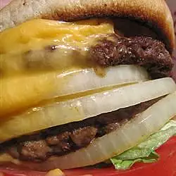

Cheeseburger Recipe

Description
This delicious cheeseburger is a great crowd pleaser! Whether you are grilling out for the game, tailgating, having friends over, or are just in the mood for a tasty burger, this recipe will be sure to hit the spot!
This cheeseburger recipe is easy to follow along and very straightforward. Get the grill hot and get ready to enjoy a perfect cheeseburger!
Ingredients
- 1 hamburger bun, split
- 1/3 lb ground beef
- 1 pinch salt
- 4 slices of your favorite cheese
- 1 tbsp thousand island dressing
- 1 slice tomato
- 1 leaf lettuce
- 1 slice onion
Steps
- Preheat gas grill to medium heat. Lightly toast both halves of the hamburger bun, cut sides down, 2 to 3 minutes. Set aside.
- Separate beef into 2 portions and form each into a thin patty slightly larger than the bun. Lightly salt each patty and cook on one side for 2 to 3 minutes. Flip patties over and immediately place two slices of American cheese on each one. Cook until meat has reached desired doneness, 2 to 3 minutes more. An instant-read thermometer inserted into the center should read at least 160 degrees F (70 degrees C).
- Assemble the double cheeseburger in the following order: bottom bun, dressing, tomato, lettuce, beef patty with cheese, onion, beef patty with cheese, and top bun.
Home